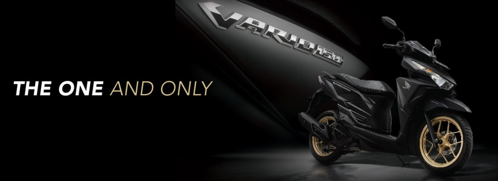
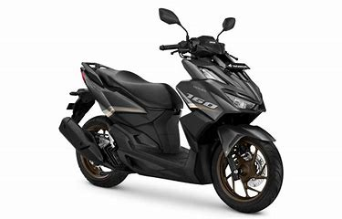

Recomendasi Motor Honda
Honda Vario 160
Honda Vario 160 adalah skuter matik yang menarik perhatian dengan kombinasi gaya, kinerja, dan fitur-fitur canggihnya. Berikut adalah deskripsi rekomendasi untuk Honda Vario 160:


Honda BeAT
Honda BeAT adalah skuter matik yang populer dan andal yang dirancang untuk pemakaian sehari-hari di perkotaan. Berikut adalah deskripsi rekomendasi untuk Honda BeAT.